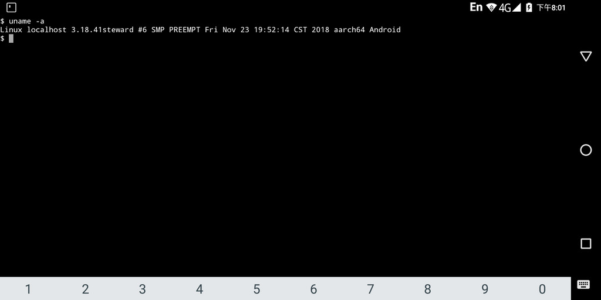

Steward
分享是一種喜悅、更是一種幸福
手機 - Gemini PDA 4G - Android - Flash Kernel Image(TWRP)
參考資訊：
https://github.com/dguidipc/gemini-android-kernel-3.18
https://github.com/gemian/gemini-keyboard-apps/wiki/KernelCompilation
由於Android Kernel的ramdisk檔案無法相容於Gemini PDA(Debain)，因此，最快的方式就是提取Android系統既有的檔案，過程說明如下。
1. TWRP Backup boot partition(boot.emmc.win)
2. 編譯Kernel取得Image.gz-dtb
$ cd
$ git clone https://github.com/osm0sis/mkbootimg.git
$ cd mkbootimg
$ make
$ sudo cp mkbootimg /usr/bin/
$ sudo cp unpackbootimg /usr/bin/
$ cd
$ mkdir unpack
$ cd unpack
$ unpackbootimg -i xxx/boot.emmc.win
Android magic found at: 0
BOARD_KERNEL_CMDLINE bootopt=64S3,32N2,64N2 buildvariant=user
BOARD_KERNEL_BASE 00000000
BOARD_RAMDISK_OFFSET 04f80000
BOARD_SECOND_OFFSET 00e80000
BOARD_TAGS_OFFSET 03f80000
BOARD_PAGE_SIZE 2048
BOARD_SECOND_SIZE 0
BOARD_DT_SIZE 0
$ ls
boot.emmc.win-base boot.emmc.win-name boot.emmc.win-ramdisk.gz boot.emmc.win-tags_offset
boot.emmc.win-cmdline boot.emmc.win-os_patch_level boot.emmc.win-ramdisk_offset boot.emmc.win-zImage
boot.emmc.win-dt boot.emmc.win-os_version boot.emmc.win-second boot.emmc.win-zImage.fdt
boot.emmc.win-kernel_offset boot.emmc.win-pagesize boot.emmc.win-second_offset boot.emmc.win-zImage.gunzip
$ mkbootimg --kernel xxx/Image.gz-dtb --ramdisk boot.emmc.win-ramdisk.gz --base 0x40080000 --second_offset 0x00e80000 --cmdline "bootopt=64S3,32N2,64N2 log_buf_len=4M" --kernel_offset 0x00000000 --ramdisk_offset 0x04f80000 --tags_offset 0x03f80000 --pagesize 2048 -o linux_boot.img
$ git clone https://github.com/steward-fu/gemini_twrp_flashable_kernel
$ cp linux_boot.img gemini_twrp_flashable_kernel/boot.img
$ cd gemini_twrp_flashable_kernel
$ zip -r ../gemini_twrp_kernel.zip *
3. 接著開機進入TWRP(開機按住側邊銀色按鍵)並刷入gemini_twrp_kernel.zip
